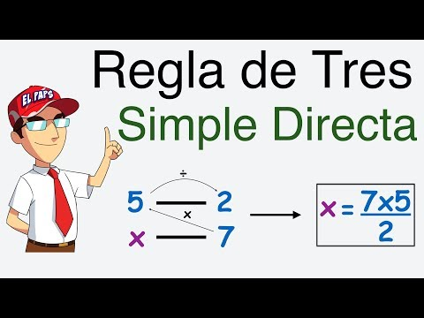
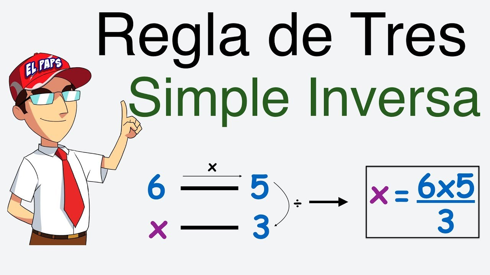

“Nunca te rindas tratando de hacer lo que realmente deseas hacer. Donde hay amor e inspiración, nada te puede salir mal”.

Directa
La regla de tres simple directa se utiliza cuando el problema trata de dos magnitudes directamente proporcionales.
Podemos decir que dos magnitudes son directamente proporcionales cuando al multiplicar o dividir una de ellas por un número,
la otra queda multiplicada o dividida respectivamente por el mismo número.
leer más

Inversa
La regla de tres simple inversa se utiliza cuando el problema trata de dos magnitudes inversamente proporcionales.
Podemos decir que dos magnitudes son inversamente proporcionales cuando al multiplicar una de ellas por un número, la otra se divide por el mismo, y viceversa.
leer más